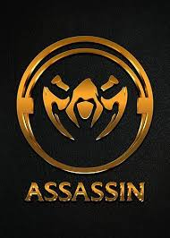
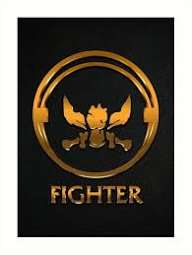
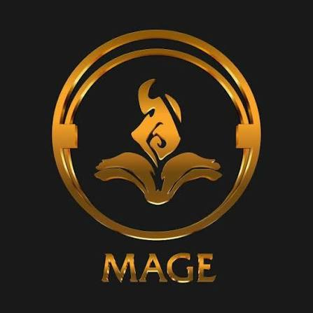
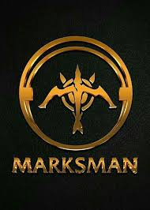
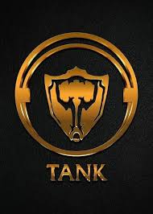
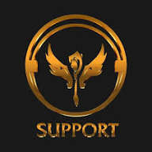

Assasin

Role assassin adalah pembunuh cepat dengan mobilitas dan damage besar yang bertugas untuk menghabisi target yang rentan seperti mage atau marksman. Assassin harus lincah, memiliki posisi dan timing yang tepat, serta bisa bermain agresif namun tetap waspada terhadap bahaya, karena biasanya memiliki HP rendah dan mudah dibunuh jika salah langkah
Fighter

Role Fighter
dalam game MOBA (seperti Mobile Legends) adalah petarung jarak dekat yang serbaguna, menggabungkan daya tahan tinggi (mirip Tank) dan damage besar (mirip Assassin)
Mage

Role Fighter
dalam game MOBA (seperti Mobile Legends) adalah petarung jarak dekat yang serbaguna, menggabungkan daya tahan tinggi (mirip Tank) dan damage besar (mirip Assassin)
Marksman

Role Marksman (MM)
adalah tipe hero dalam game MOBA (seperti Mobile Legends) yang memiliki serangan jarak jauh dengan damage sangat tinggi, terutama mengandalkan basic attack dan bersinar di late game (akhir permainan) ketika item sudah lengkap, berfungsi sebagai pembawa damage utama tim untuk menghancurkan turret dan membunuh musuh, namun biasanya memiliki pertahanan rendah sehingga perlu posisi aman di belakang hero lain
Tank

Role Tank
adalah peran dalam game multiplayer online battle arena (MOBA) seperti Mobile Legends atau Overwatch yang bertugas sebagai "perisai daging" tim, dengan HP dan pertahanan tinggi untuk menyerap damage musuh, melindungi rekan setim yang lebih lemah, menginisiasi serangan, dan mengontrol pergerakan lawan (Crowd Control), berfungsi sebagai garda depan yang vital dalam pertarungan tim
Support

Role support
(peran pendukung) adalah peran vital dalam tim, baik di game online maupun dunia kerja, yang fokusnya bukan pada menjadi bintang utama (damage dealer/pembunuh) tetapi pada memastikan kesuksesan tim dengan memberikan bantuan, perlindungan, dan sumber daya seperti penyembuhan (heal), pelindung (shield), kontrol kerumunan (crowd control), atau dukungan logistik dan informasi, agar rekan satu tim bisa lebih efektif dan tim secara keseluruhan kuat dan bertahan